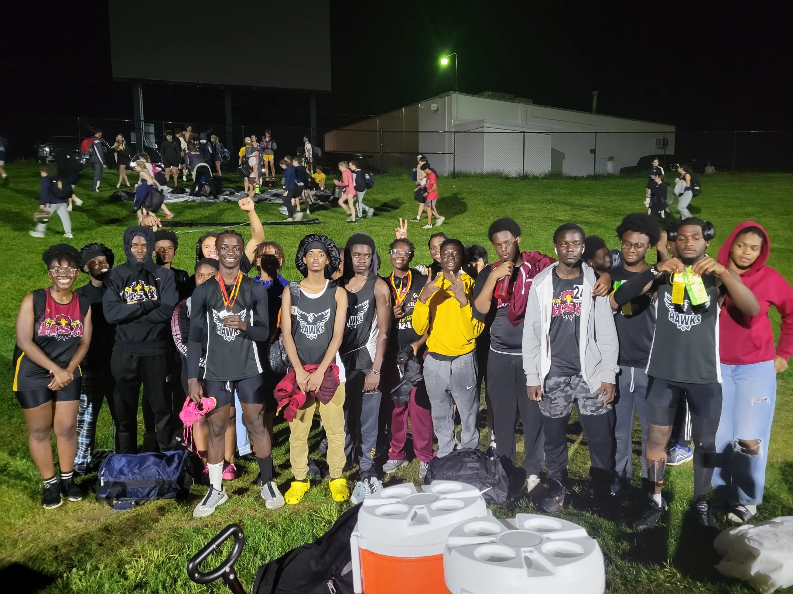

Sophomore Year:
Freshman year went well for me, so I wanted to replicate that success. I entered Sophomore year with a “go big or go home” mentality, where I tried to do everything. I was a part of Key Club (again) and joined both the Track Team (Coach Palmer) as well as Drone Club (Mr. Dal).
- For Track, I primarily ran the 4*800 as well as the 1600-meter race(s).
Track:
Just like freshman year. I was put into Health and Programming Pathway classes.
Sophomore Year Schedule:
- U.S. History
- - Mr. Froehlich
- Biomedical Engineering
- - Ms. Meldrum
- Physical Education I
- - Mr. Edwards
- Object-Oriented Programming
- - Mr. Dal
- English II
- - Mr. Jordan
- Computer-Based Learning
- - Ms. Moore
- Geometry
- - Mr. Dein
Biomedical Engineering -
For Biomedical Engineering (Ms. Meldrum), we first went over Lab Equipment and Safety during the first couple of weeks of school. We learned about identifying hypotheses, independent variables, dependent variables, as well as other factors, and as the school year progressed, we learned about various subjects. We learned about the different macromolecules (Carbohydrates, Lipids, Proteins, Nucleic Acids), and learned about the different parts (organelles) within a cell, such as the nucleus and ribosomes. During Semester 2, we as a class focused a lot on the Cell Cycle (including Mitosis and Meiosis) as well as DNA, evolution, and the different cycles that are a part of life (Water Cycle, Carbon Cycle, etc.).
Object-Oriented Programming -
For Object-Oriented Programming (Mr. Dal), we as a class worked on Python; We practiced Python on Eclipse IDE as well as on Replit. Some of us worked on CoderZ, which was basically a programming game competition where we had to program a truck/car to do certain tasks. I enjoyed doing CoderZ as it was fun and the competition part was exciting; I wish I did better, though.
CoderZ:

During class (Object-Oriented Programming), we made a bunch of projects on Code.org. I personally liked creating the Quiz app about what I learned in Biomedical Engineering.
Code.org Projects:


I competed in Codeathon for the first time this year (Sophomore Year). I worked on it with Nahom, and we worked on it as partners. Our topic was: Goal 15: Left on Land Team Name: Horizon Hawk Boys We did our project on Code.org, and we completed it, but I don’t think we submitted it on time.
Codeathon:
Slides
Project
Images
.png)
.png)
.png)